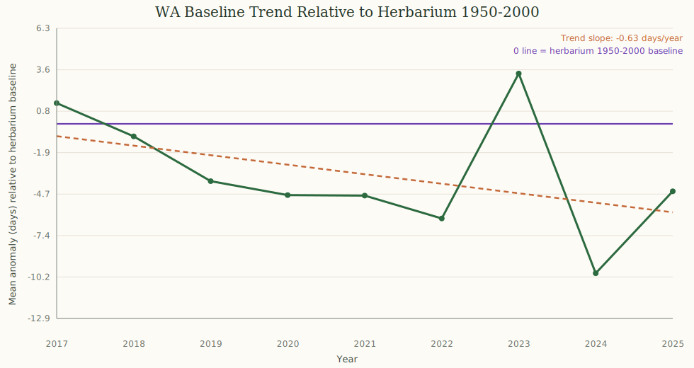

Long-Term Context: iNaturalist vs Herbarium Baseline
This plot compares recent spring onset behavior (2017-2025, from iNaturalist flowering observations) to a longer-term historical baseline from herbarium specimens (1950-2000).
The chart is normalized so that 0 = herbarium baseline. Values below 0 indicate earlier onset relative to that historical baseline; values above 0 indicate later onset.
iNaturalist data are high-volume and recent but observer-driven. Herbarium data are sparse and historical, collected with different goals and uneven sampling through time and space. Both sources carry bias, but together they provide stronger context than either alone.
Baseline Trend Relative To Herbarium 1950-2000
Data Source Reference
Consortium of Pacific Northwest Herbaria (CPNWH):
https://www.pnwherbaria.org/
Herbarium records were filtered to Washington and flowering phenology terms containing "flower"/"flowering".